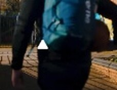
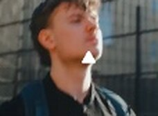
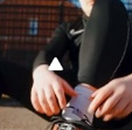
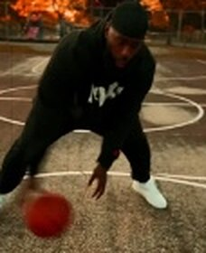
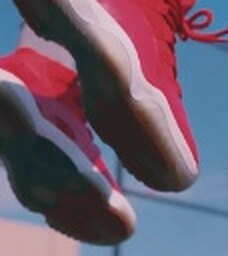
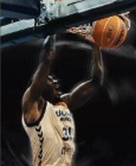

PLAN 1 — Plan de dosYanis arrive sur le terrain, balle en main. Mvt gauche → droite.

PLAN 2 — FaceIl s'avance vers le terrain, la caméra glisse face à lui.

PLAN 3 — Insert lacetsTilt up des lacets jusqu'au visage.

PLAN 5 — Middle shotÉchauffement, dribbles.

PLANS 10-11 — DunkGros plan des pieds qui décollent.

PLAN 12 — Contre-plongéeLe dunk vu d'en bas, couleur puis N&B.